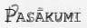

| vçsture | statistika | mâcîbas | darbinieki | absolventi | panâkumi | nodarbes | pasâkumi | saites | kontakti | |||||||||||||
|  |
Tradicionâlie konkursi |
Viesturiete un Viesturietis (10.-12. klasçm) |
Stils un Mode (5.-12. klasçm) |
Populârâkais skolçns un skolotâjs |
Superpuika un supermeitene (5.-6. klasçm) |
Kas? Kur? Kad? (Erudîtu konkurss 5.-12. klasçm) |
Konkurss "Gudrinieks" (3.-4. klasçm) |
Ko tu proti? (Talantu konkurss) |
Zinâtniski pçtnieciso un radoðo darbu lasîjumi (5.-12. klasçm) |
Skolas dîdþeju konkurss (7.-12. klasçm) |
Sacensîbas ritmikas kausa izcîòâ (2.-3. klasçm) |
Konkurss "Dziesma manai paaudzei" (3.-12. klasçm) |
Mana skola (5. klasçm) |
Ârpusskolas pasâkumi |
15.11.02 Vidusskolas deju kolektîva un Vjandras ìimnâzijas Igaunijâ kopçjs draudzîbas koncerts |
21.11.02 Skolas TT "Sprîdîtis" viesizrâdes Limbaþu JC ar izrâdçm "Vai jau rîts" un "Cûkgans" |
21.11.02 Draudzîbas vakars ar Limbaþu JC teâtri "Krikði" |
17.01.03 Skolas estrâdes grupas koncerts Cçsu Draudzîgâ aicinâjuma ìimnâzijâ |
20.03.03 Kopîgs koncerts un draudzîbas vakars ar Rûjienas vidusskolas un Valkas 1. vidusskolas jauktajiem koriem |
02.05.03 Skolas paðpârvalde rîko Vidzemes reìiona skolu paðpârvalþu komandu florbola turnîru, kâ arî estrâdes un neatkarîgo grupu koncertu |
20.05.03 TT "Sprîdîtis" piedalîsies Valmieras skolçnu teâtru festivâlâ ar izrâdçm "Mauglis" /L. Stumbres dramat./ un "Stunda" /Junesko/ |
Daþâdi pasâkumi |
1. skolas diena |
Zinîbu diena - pirmklasnieku uzòemðana viesturieðu saimç |
Skolotâju diena |
Rudens izstâdes (1.-4. klasçm) |
Dzejas svçtki |
Aristoteïa svçtki (9.-12. klasçm) |
Lâèplçða diena - skautu taka Daliòos |
Latvijas Republikas neatkarîbas proklamçðanas gadadiena |
Darba svçtki |
Skolas dzimðanas diena (09.12.) |
Labdarîbas nedçïa (pirms Ziemassvçtkiem) |
Ziemassvçtku eglîte, labâko skolçnu apbalvoðana |
Projektu nedçïa (2.-12. klasçm) |
Valentîna dienas pasâkumi |
Þetonu vakars |
Viesturðovs (9.-12. klasçm) |
Popiela (1.-8. klasçm) |
Atvçrto durvju diena (jaunajiem 10.klaðu skolçniem) |
Mâtes diena, paðdarbnieku atskaites koncerts |
Pçdçjais zvans (9., 12. klasçm) |
Izlaidums (9., 12. klasçm) |
Absolventu salidojums reizi 5 gados (pçdçjais salidojums bija 2000. gadâ) |
Sporta pasâkumi |
volejbola turnîrs |
basketbola turnîrs |
futbola turnîrs |
ðaha un dambretes turnîrs |
sporta diena 3 reizes gadâ (4 vecuma grupâm) |
|
© Valmieras Viestura vidusskola 2003 |